The laptop orchestra is a large-scale, computer-mediated ensemble that explores cutting-edge technology in combination with conventional musical contexts—while radically transforming both. This unique ensemble format comprises laptops, human performers, controllers, and custom multi-channel speaker arrays designed to provide each computer-based instrument with its own acoustic identity and presence. The orchestra fuses a powerful sea of sound with the immediacy of human music-making, capturing the irreplaceable energy of a live ensemble performance as well as its sonic intimacy. At the same time, the orchestra makes use of the computer’s capabilities to experiment with sounds, instruments, and new forms of musical expression. Offstage, the ensemble serves as a unique laboratory and classroom that explore music, computer science, interaction design, composition, and live performance. Since inception, ChucK has been a primary programming tool for all aspects of SLOrk (instrument design, sound synthesis, teaching, and more recently graphics and animation).
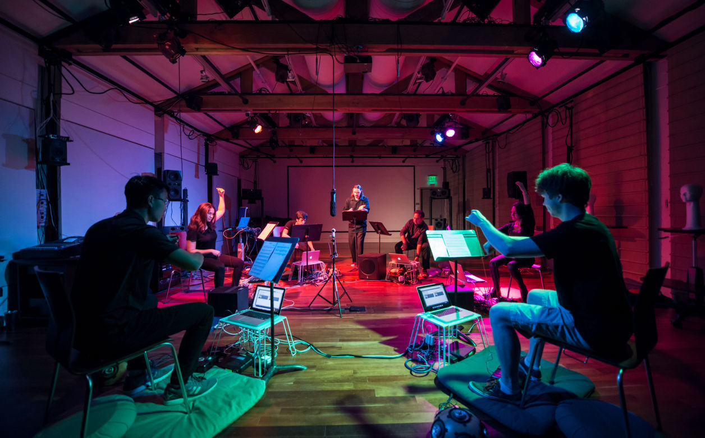
SLOrk performs at SLOrktastic Chamber Music (6-8 humans and laptop stations) at CCRMA Stage in 2018.
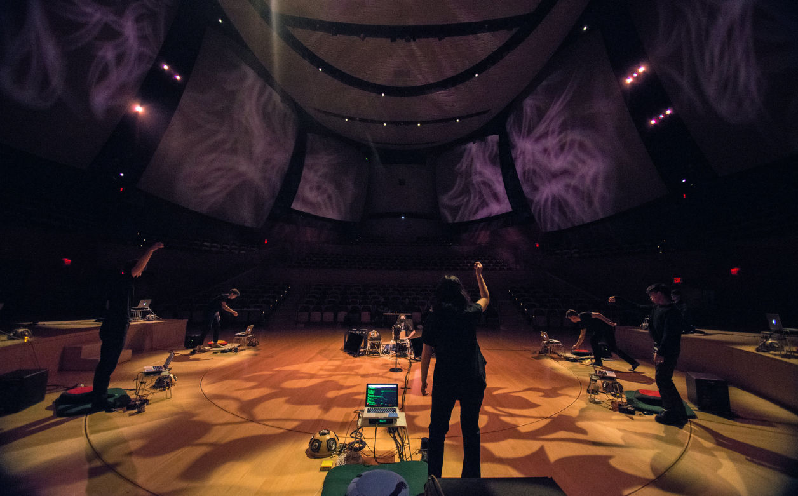
Stanford Laptop Orchestra (SLOrk) at full-scale (12-20 humans and laptop stations) rehearsing for a concert in 2024 at Bing Concert Hall, Stanford University
I have served as the founding Director of the Stanford Laptop Orchestra (SLOrk) since its inception in 2008. SLOrk (along with its predecessor and East Coast sibling, PLOrk) helped to "popularize" the medium within academia and with the mainstream press, and it is still going strong long since it was "all the rage". SLOrk continues because it is a unique place where people come to make music and make it together. "Innovation" in SLOrk involves technology but is ultimately never about the technology; rather, progress is measured by the continual creation of new pieces and performances and learning contexts. As the Director of the Stanford Laptop Orchestra, this has been my mission since bringing the idea from the Princeton Laptop Orchestra (PLOrk), founded by Dan Trueman and Perry Cook in 2005 at Princeton University (where I received my Ph.D. and helped to build and teach PLOrk). Since 2008, SLOrk has led to the creation and premiere of over 250 new works, including a feature-length "laptopera" (laptop orchestra opera). The amount of output in the forms of musical works, musical instruments, and performances would be too numerous to list. Instead, I have curated a selection of highlights below.
This video showcases a range of Stanford Laptop Orchestra performances, from solo to chamber-sized works, from works for full orchestra to a "laptopera". The extended excerpts in this video also offer a cross-sectional view of SLOrk's musical and instrument design philosophies over the past decade. (While SLOrk embraces a diversity of tools and approaches, all pieces in this video were created using ChucK.)
Read more about SLOrk
Ge Wang. "The Birth and Rise of the Laptop Orchestra." 2018. A photocomic excerpt from Artful Design: Technology in Search of the Sublime.
Ge Wang, Nicholas J. Bryan, Jieun Oh, and Rob Hamilton. 2009. “Stanford Laptop Orchestra (SLOrk).” In Proceedings of the International Computer Music Conference.
Ge Wang, Dan Trueman, Scott Smallwood, and Perry R. Cook. 2008. “The Laptop Orchestra as Classroom.” Computer Music Journal. 32(1):26-37.
Scott Smallwood, Dan Trueman, Perry R. Cook, and Ge. Wang. 2008. “Composing for Laptop Orchestra." Computer Music Journal. 32(1):9-25.
(press feature) Arielle Pardes. 2018. "The Aural Magic of Stanford's Laptop Orchestra." Wired Magazine.
Laptop orchestras such as SLOrk represent an embodied inquiry into cutting-edge technology for music-making, without abandoning what we traditionally value about group-based music making—including physicality and acoustic presence. We built the SLOrk hemispherical speakers arrays out of wooden salad (from IKEA in 2008 and from Target in 2025). The hemispherical speaker arrays (see figures below) are designed to keep sound local to each instrument and human performer, an acoustic feature that profoundly influences how instrument and sound are designed, how music is written and performed, and how it is experienced by the audience.
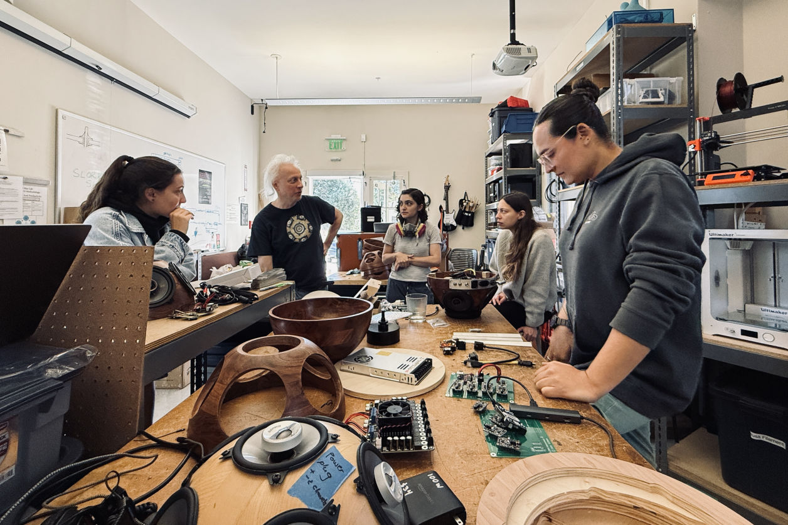
SLOrk members (from right to left: Celeste, Summer, Kelly, Matt, Luna) working on the second generation of SLOrk hemispherical speaker arrays in 2025
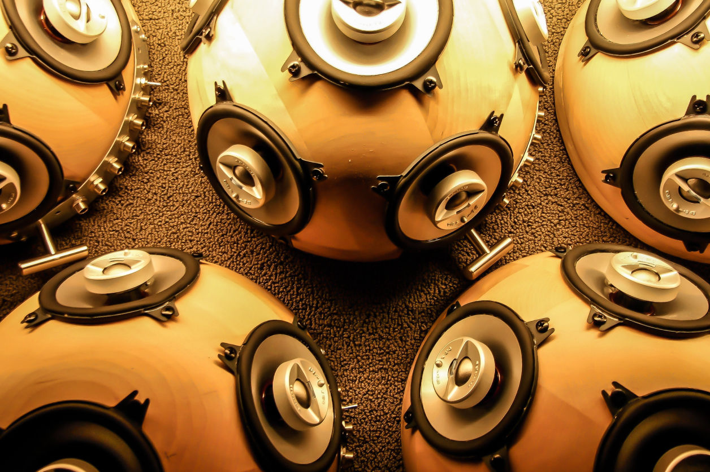
SLOrk hemispherical speaker arrays, the first generation of which was designed and built at CCRMA in 2008 from IKEA salad bowls and car loudspeaker drivers
The Stanford Laptop Orchestra exists primarily in the form of an annual course: Music 128 / Computer Science 170 "Stanford Laptop Orchestra: Coding, Composition, and Performance". Students come from a diversity of disciplines ranging from Computer Science to Music to Human Biology to Philosophy to Graduate School of Education and more. By design, students engage in group work, but we make every effort to not designate specialties (e.g., we avoid having the computer science students do the coding; the music students do the composing, etc.). Instead, SLOrk fosters a "full-stack" mindset where each student engages broadly with each of the aspects of sound design, composition, instrument design, performance, and coding. While this intentional avoidance of specialty may seem less than "optimally efficient", we are insisting students step out of their comfort zones and learn to be accountable for all of what they do. We believe that this gives students broader perspectives and almost always leads to more authentic art. At Stanford, in the heart of Silicon Valley, where the pressure to be competitive/productive/impressive can be stifling, SLOrk is meant as a protected space to intensively explore technology and music as an ensemble, and where intention and craft is valued above achievement.
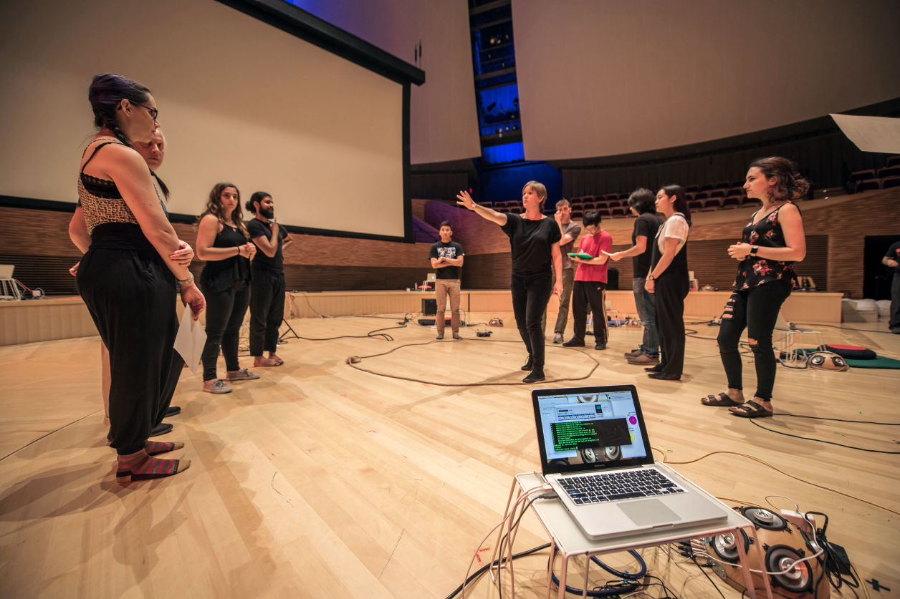
Towards the end of each season, SLOrk ensemble members participate in a three-day mini-residency at Bing Concert Hall to intensively prepare for the Spring Concert.
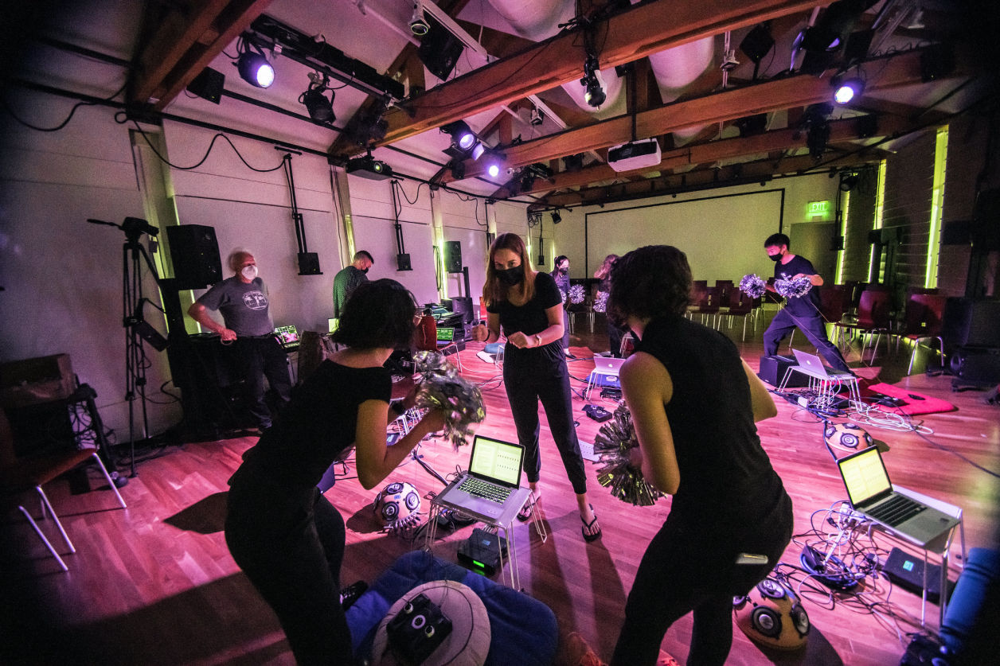
The SLOrk classroom in action: new instruments and new musical works are critiqued, workshopped, and rehearsed weekly.
The Stanford Laptop Orchestra (SLOrk) presents the first-ever laptopera. The Furies: A Laptopera is a retelling of the Greek tragedy Electra. Blending a number of versions of the Electra story including works by Aeschylus, Sophocles, Euripides, and Jean Paul Sartre, this retelling explores central questions regarding how communities escape from cycles of violence, the role of guilt and shame in community identity, personal responsibility, how justice interfaces with cycles of violence, and redemption. The artistic medium of the laptop orchestra both serves to recast the traditional instrumental role in a new kind of operatic medium (the “laptopera”) that reimagines the potential of instrument building to support dramatic elements and character relationships—while simultaneously positing questions about technology in our lives presently, both in its promise to help us flourish and in its perils to perpetuate and amplify the existing cycles of violence in our world today.
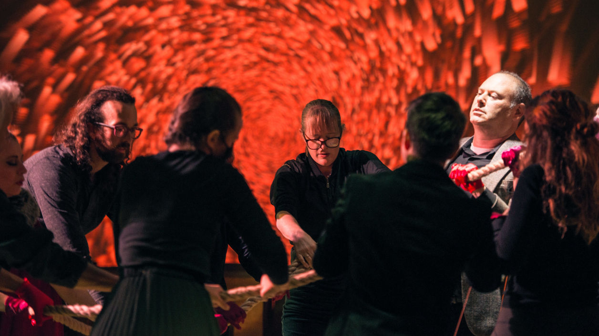
The laptopera was crafted specifically for the medium of the laptop orchestra, and featured custom instruments and live computer visuals. Pictured is The Rope, a shared physical instrument to be played by a group of performers, each of whom must account for their own (inter)actions as well as of those around them—embodying a fundamental duality of being an individual within a community.
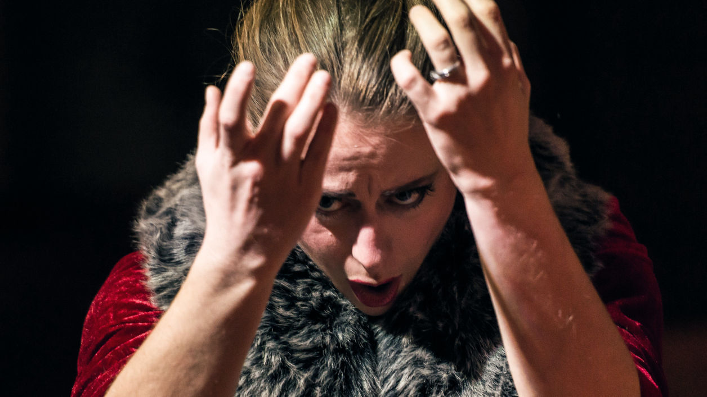
The Furies: A Laptopera explores themes of guilt, shame, community, cycles of violence in a laptop orchestra-mediated retelling of Electra.
From inception to World Premiere. The Furies began as collaboration in 2017 between composer and PLOrk veteran Dr. Anne Hege and SLOrk to explore and create a laptop orchestra-based opera. Dr. Hege composed the music and wrote the libretto, while a team designed and built the instruments using ChucK and Wekinator. The production spanned five years and two different casts, due to the COVID-19 pandemic (which unfortunately further laid bare the many cycles of violence we perpetuate upon one another). COVID led to the final act of the opera being completely reconceived: away from redemption through divine intervention by the god Apollo, towards a humanistic contemplation on community and compassion that is far more open-ended in its interpretation. I co-produced the laptopera and also created the live visuals.
Stanford Laptop Orchestra presents The Furies: A Laptopera. This is a full-length video recording (approx. 1 hour 28 minutes) from the World Premiere in November 2022 on the CCRMA Stage.
program notes (PDF) | photo gallery | laptopera website
SLOrk has presented some 40 concerts—in chamber settings, concert halls, art galleries, in gardens (we had to rent a power generator which was hidden behind bushes some 50 yard away), and in Beijing (as part of a summer residency at the Stanford Center at Peking University). Below is a list of performances I have directed since 2008.
SLOrktastic Chamber Music 2026 (upcoming at time of writing)
May 7th, 2026, Thursday 7:30pm | CCRMA Stage
2026: Saturday Night SLOrk! (upcoming at time of writing)
June 6th, 2026, Saturday 7:30pm | Bing Concert Hall, Stanford University
2025
(on parental and sabbatical leave)
SLOrktastic Chamber Music 2024 (program notes | website)
May 2nd, 2024, Thursday 7:30pm | CCRMA Stage
2024: SLOrk to the Future! (program notes | website)
June 8th, 2024, Saturday 7:30pm | Bing Concert Hall, Stanford University
The Furies: A Laptopera (World Premiere) (program notes | website)
November 11-13, 2022, Friday-Sunday | CCRMA Stage, Stanford University
SLOrktastic Chamber Music 2023 (program notes | website)
May 4th, 2023, Thursday 7:30pm | CCRMA Stage
2023: The SLOrker's Guide to Computer Music (program notes | website)
June 10th, 2023, Saturday 7:30pm | Bing Concert Hall, Stanford University
SLOrktastic Chamber Music 2022 (program notes | website)
May 5th, 2022, Thursday 7:30pm | CCRMA Stage
2022: The Return of the SLOrk (program notes | website)
June 4th, 2022, Saturday 7:30pm | Bing Concert Hall, Stanford University
2020, 2021
(The 2020 and 2021 Seasons were cancelled due to COVID-19 pandemic)
SLOrktastic Chamber Music 2019 (program notes | website)
May 2nd, 2019, Thursday 7:30pm | CCRMA Stage
2019: A SLOrk Odyssey (program notes | website)
June 8th, 2019, Saturday 7:30pm | Bing Concert Hall, Stanford University
SLOrktastic Chamber Music (program notes | website)
May 3rd, 2018, Thursday 7:30pm | CCRMA Stage
SLOrk @ Bing 2018 (program notes | website)
June 9th, 2018, Saturday 7:30pm | Bing Concert Hall, Stanford University
2017
(on sabbatical leave)
SLOrktastic Chamber Music (program notes | website)
May 1st, 2016, Sunday 7:30pm | CCRMA Stage
SLOrk @ Bing 2016 (program notes | website)
June 2nd, 2016, Thursday 7:30pm | Bing Concert Hall, Stanford University
SideLObe @ Cantor (program notes | website)
February 2nd, 2015, Monday 8:00pm | Cantor Arts Center, Modern and Contemporary Gallery
SLOrktastic Chamber Music (program notes | website)
April 30th, 2015, Thursday 8:00pm | CCRMA Stage
SLOrk @ Bing 2015 (program notes | website)
May 30th, 2015, Saturday 7:30pm | Bing Concert Hall, Stanford University
SLOrk in China (program notes | poster | photo album | website)
July 3rd, 2014 | Stanford Center @ Peking University
SLOrktastic Chamber Music 2014 (program notes | website)
May 1st, 2014, Thursday 8pm | CCRMA Stage
SLOrk @ Bing 2014 (program notes | website)
May 31st, 2014, Saturday 8pm | Bing Concert Hall, Stanford University
SLOrktastic Chamber Music 2013 (website)
May 2nd, 2013, Thursday 8pm | CCRMA Stage
SLOrk 2013 Spring Concert (program notes | website)
June 5th, 2013, Wednesday 8pm | Bing Concert Hall, Stanford University
SLOrktastic Chamber Music 2012 (website)
May 3rd, 2012, Thursday 8pm | CCRMA Stage
SLOrk 2012 Spring Concert (program notes | website)
June 6th, 2012, Wednesday 8pm | Dinkelspiel Auditorium, Stanford University
SLOrktastic Chamber Music 2011 (program notes | website)
April 28th, 2011, Thursday 8pm | CCRMA Stage
SLOrk 2011 Spring Concert (program notes | website)
June 1st, 2011, Wednesday 8pm | Dinkelspiel Auditorium, Stanford University
SLOrktastic Chamber Music 2010 (featuring Jordan Rudess) (website)
April 29th, 2010, Thursday 8pm | CCRMA Stage
SLOrk 2010 Spring Concert (program notes | website)
June 2nd, 2010, Wednesday 8pm | Dinkelspiel Auditorium, Stanford University
SLOrk @ MacWorld 2009
Janaury 9th, 2009, Friday | Moscone Center, San Francisco
SLOrk => Southern California
7pm, March 20th, 2009, Friday | Distinctive Voices @ The Beckman Center
SLOrktastic Chamber Music I (website)
May 9th, 2009, Saturday 8pm | CCRMA Stage
SLOrktastic Chamber Music II (website)
May 16th, 2009, Saturday 8pm | CCRMA Stage
SLOrk 2009 Spring Concert (website)
June 4th, 2009, Thursday 8pm | Dinkelspiel Auditorium, Stanford University
Sonic SLOrk Sculptures (website)
April 26th, 2008, Saturday 3pm | New Guinea Sculpture Garden, Stanford University
SLOrktastic Chamber Music (program notes | website)
May 24th, 2008, Saturday 8pm | CCRMA Stage
Twilight Concert 2008 (program notes | website)
June 3rd, 2008, Tuesday 8pm | CCRMA Courtyard, Stanford University
Pacific Rim of Wire (program notes | website)
April 29th, 2008, Tuesday 8pm | Dinkelspiel Auditorium, Stanford University
Over nearly two decades, the Stanford Laptop Orchestra has produced an expansive portfolio of musical works, new instruments, and performances. Each of these serve simultaneously as acts of engineering, artistic expression, and critical practice research into what it means to make computer music together as an ensemble and a community of musician tool-builders. We end this entry in the Portfolio with a few selected images of SLOrk from over the years.
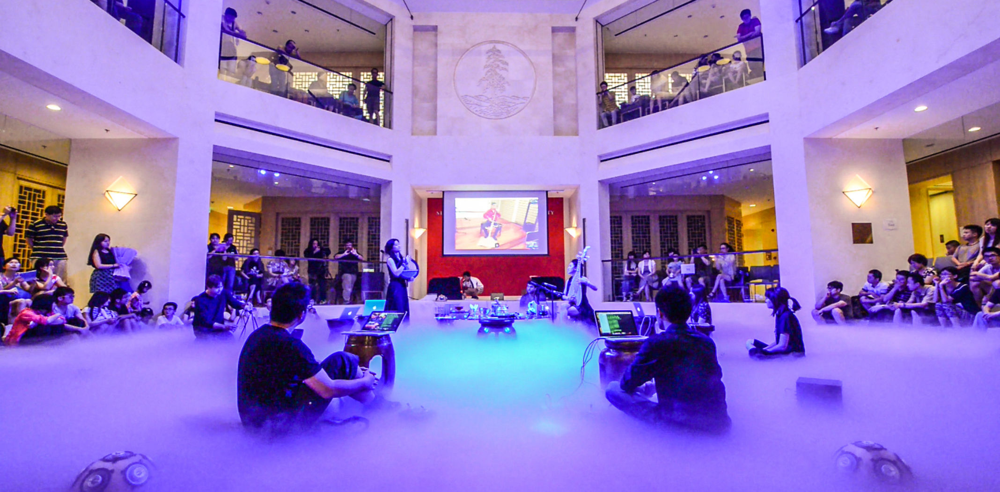
2014: SLOrk in Beijing. A three week summer residency at the Stanford Center in Peking University, SLOrk presents a concert of new works.
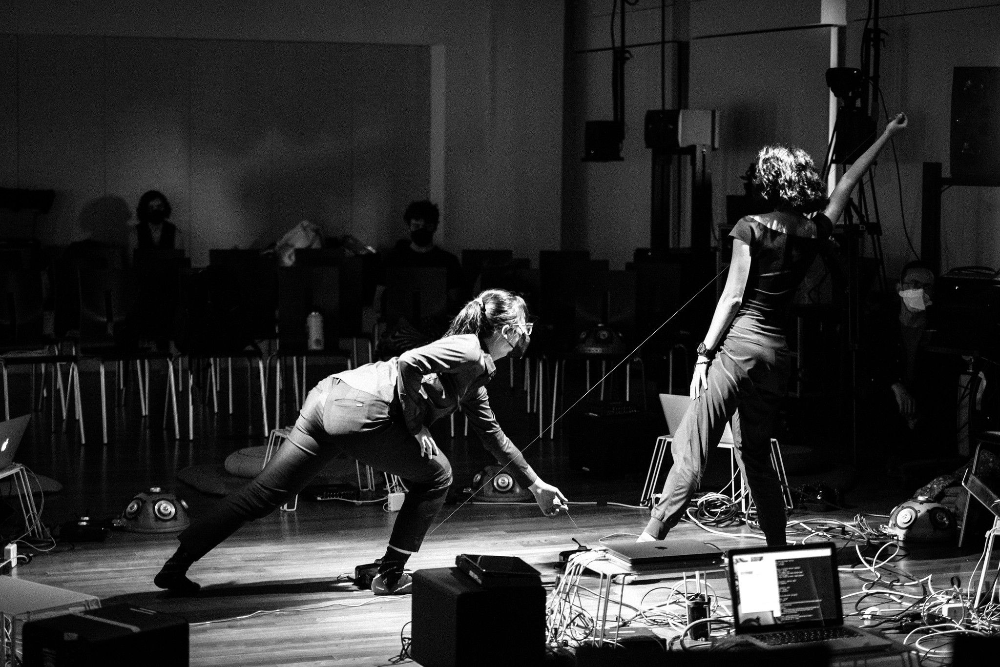
2021: SLOrk members Xiaomian Yang and Tess Rinaldo rehearses their piece "Color of Glass", a duet that depicts two voices learning to harmonize with one another. They explore the extremes of their own sounds, and the boundaries between themselves and each other.
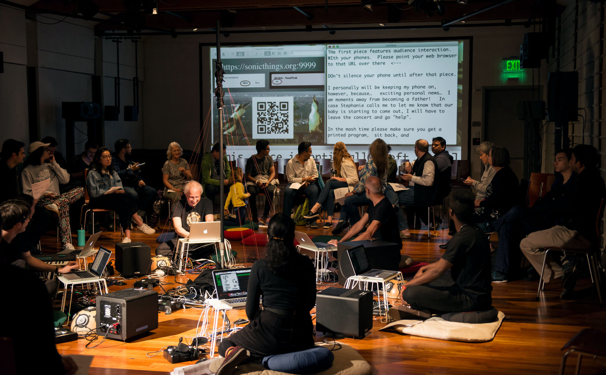
SLOrktastic Chamber Music 2017
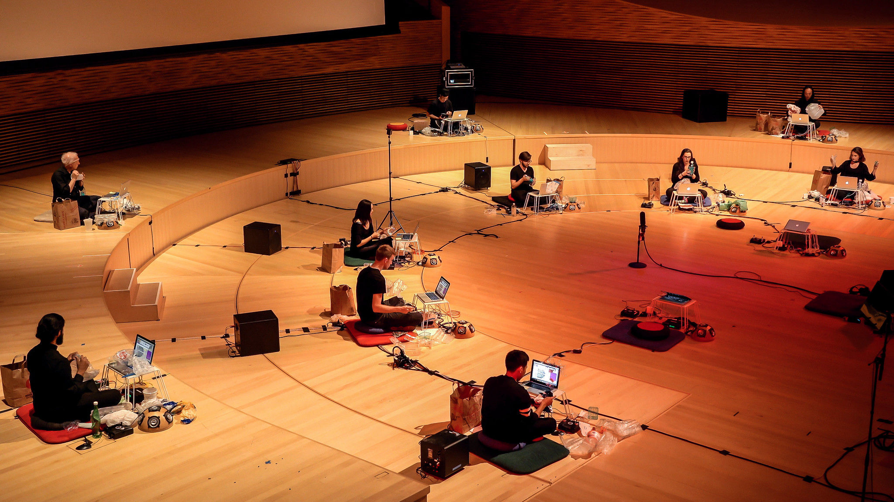
2019: SLOrk performs at Bing Concert Hall. "Once & Done" by Hassan Estakhrian explores the sound of plastic as a sonic reflection on its use and impact on our world.
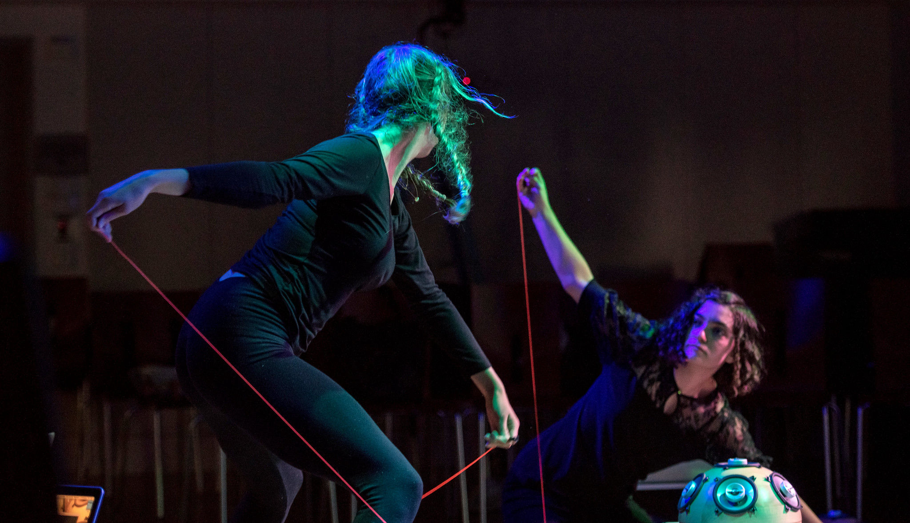
2023: There is a history of SLOrk works (and instruments) that blur the boundary between musical performance and dance.
Kelly Cochran & Analiese Bancroft rehearses a instrumental/dance duet in "A Synthetic Storm".
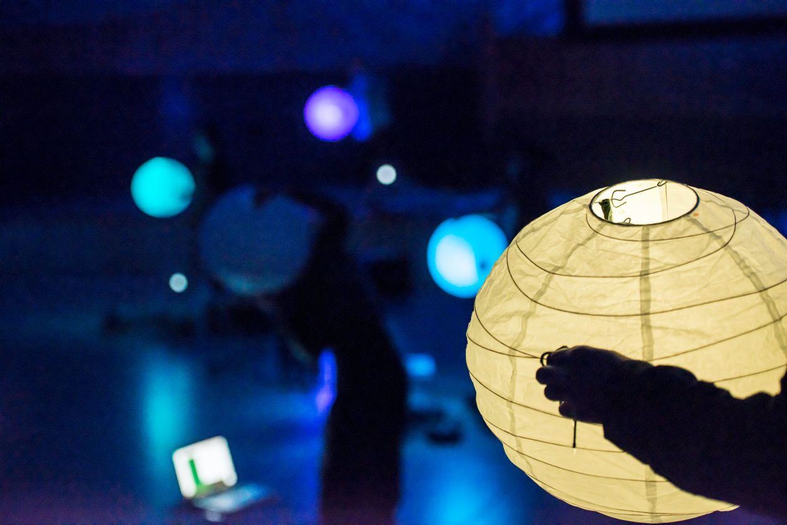
...this piece featured custom lanterns that contains LEDs, sensors, and wireless communication. The serenity of the piece does not reflect the behind-the-scene toil and anxiety of keeping a fleet of custom wireless and battery-powered lantern operational.
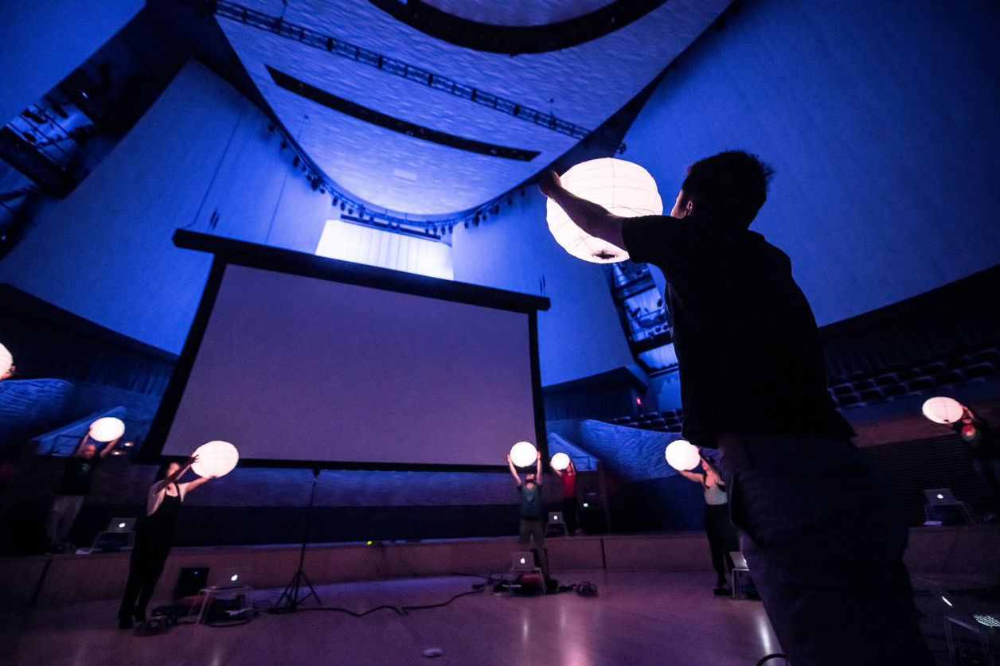
2019: SLOrk performs "Aura" by Kunwoo Kim...
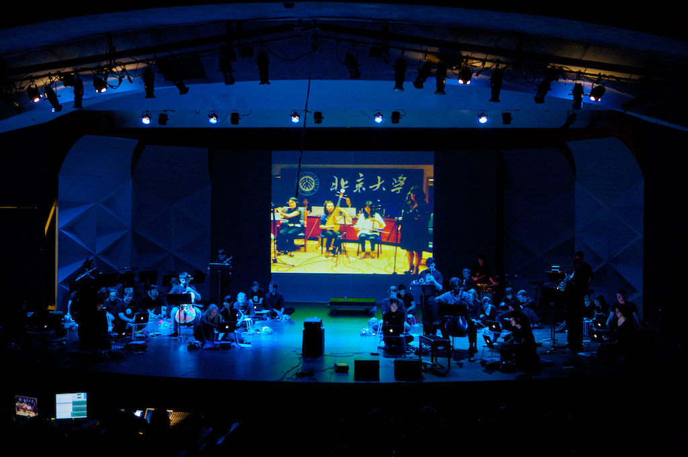
2008: One of the very first SLOrk performances was at the Pacific Rim of Wire concert at Dinkelspiel Auditorium at Stanford University.
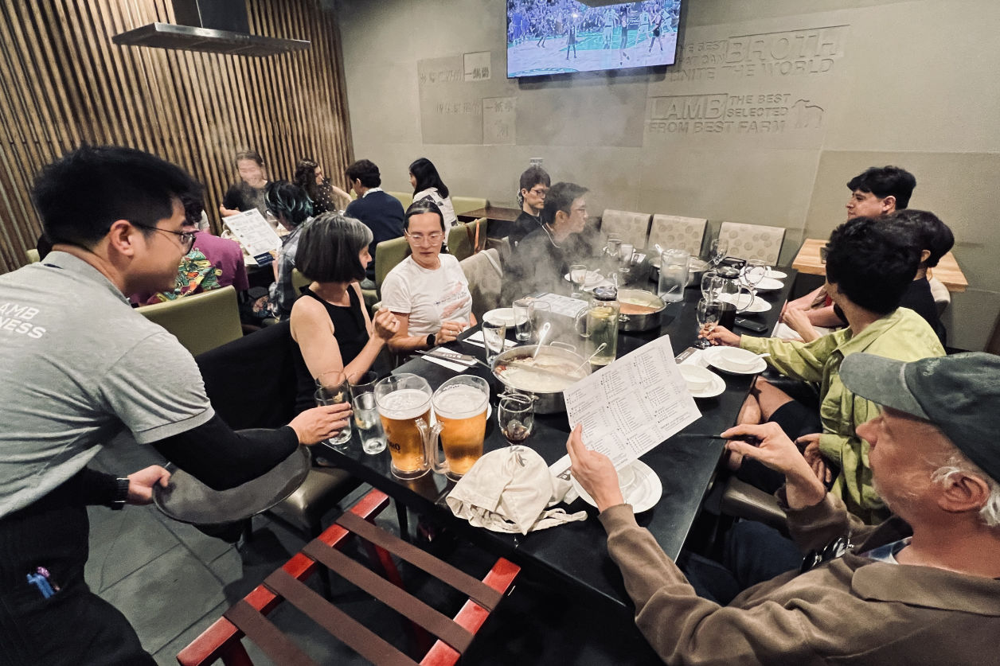
Eating together is a valued tradition of SLOrk culture. I try to keep everyone happily fed through rehearsals and concerts. Each season culminates in an evening of hot pot.
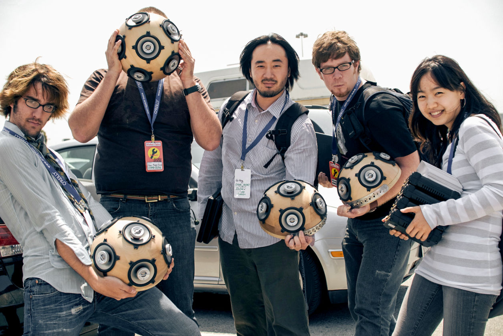
SLOrk wouldn't work without the community and a sense of fun that serve as a cultural medium to do the work.
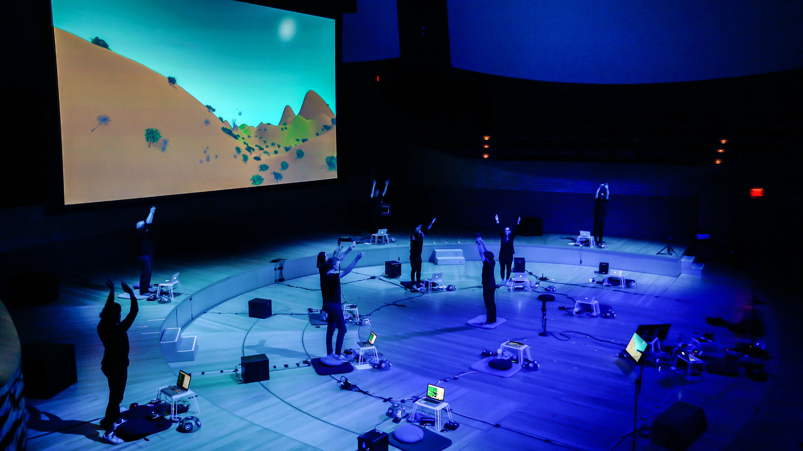
SLOrk has explored and incorporated a range of musical interactions: including physical gestures, live coding, audiovisual performance, dance, and virtual reality. "Aura" (2019) by Jack Atherton is an extended reality SLOrk performance where the conductor is in VR (and what he sees is projected on for the audience); all other players are physical-world entities with a one-to-one correspondence to entities in virtual reality.